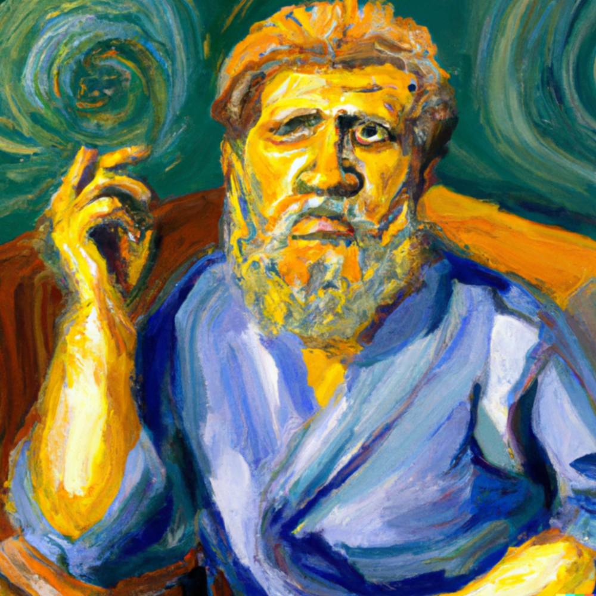
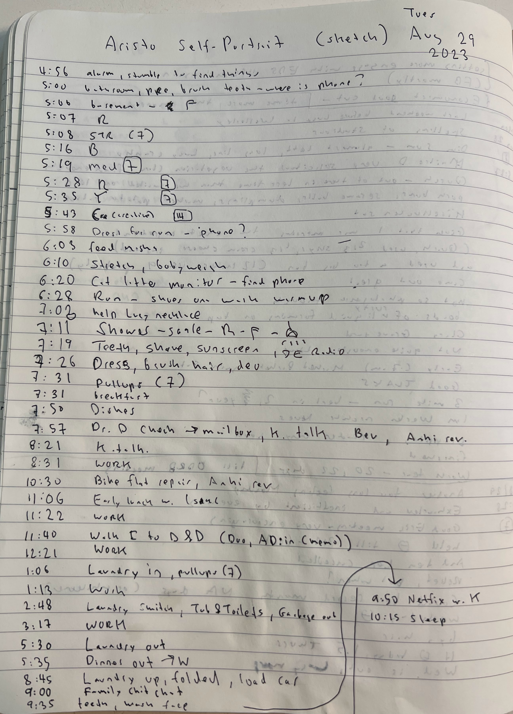
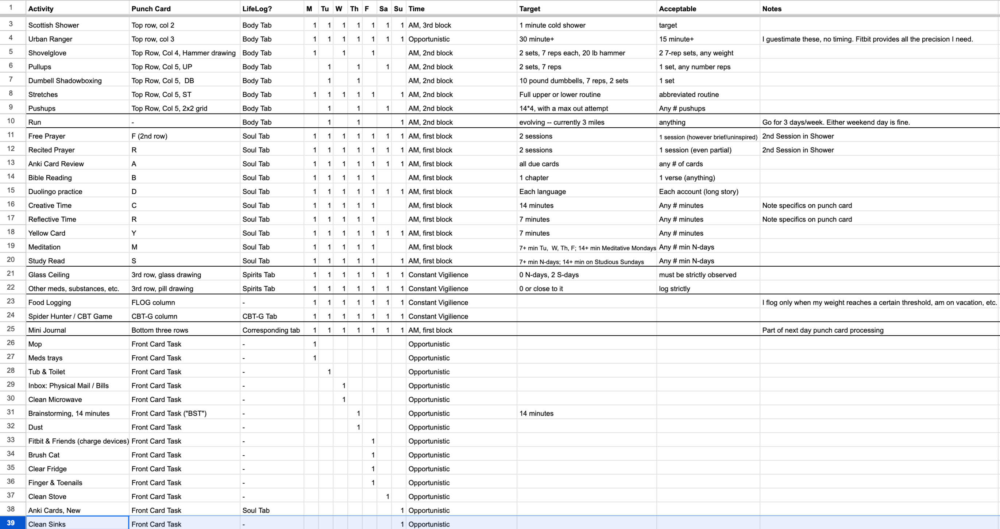
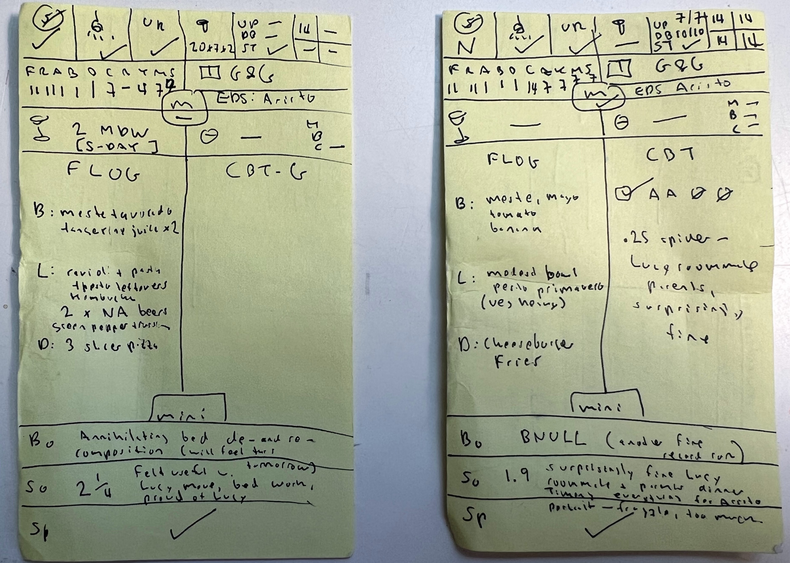

<!DOCTYPE html>

<head>
<meta charset="utf-8"/>
<meta content="width=device-width, initial-scale=1.0" name="viewport"/>
<title>Episode 77: Aristotelian Self-Portrait</title>
<link rel="stylesheet" href="../../css/style.css" />
<style>
.fullw { max-width: 800px; }
figure { margin: 0; }
</style>
<script type="text/javascript">

</script>
</head>
<body>
<div id="main">
<h1><a href="/">Everyday Systems</a>: <a href="../../">Podcast</a> : Episode 77</h1>
<h2>Aristotelian Self-Portrait</h2>
<iframe class="yt-player" width="100%" height="200" src="https://www.youtube-nocookie.com/embed/ktPW5igIcA0?modestbranding=1&rel=0&playsinline=1" title="Everyday Systems Podcast Episode 77" loading="lazy" allow="accelerometer; autoplay; clipboard-write; encrypted-media; gyroscope; picture-in-picture; web-share" referrerpolicy="strict-origin-when-cross-origin" allowfullscreen></iframe>
<p style="text-align:center"><a href="http://media.libsyn.com/media/reinhard/eds-77-aristo-self-portrait.mp3">Download mp3</a></p>


<p>Do you slather on sunscreen every morning? And then reapply every two hours? 365 days a year? This may sound crazy (it may be crazy) but apparently this is the dermatologically correct thing to do to mitigate skin cancer risks. And I don’t doubt that on a physiological level it might be.
</p>
<p>But I try to imagine the person who actually does this. Every two hours. Winter, spring, summer and fall. I imagine kids waiting to be picked up from afterschool because daddy is late – he had to reapply his sunscreen. I imagine him about to run out the door and then doing an about face – forgot the sunscreen. Or maybe he’s halfway down the block already. I imagine him trying to hold down a job. I imagine his relief after he’s been fired because now at least he’ll have time to put on all that sunscreen.
</p>
<p>But of course, the type of person who reapplies sunscreen every two hours will also be the type of person who makes sure to floss every a day, use an interdental pick and a gum stimulator, wear a bite guard to bed, chew xylitol gum, eat dental probiotics (along with many other types of probiotics), get at least eight hours of high quality sleep, meditate for twenty minutes morning and evening, get in 40 minutes of cardio, stretch, warm up, cool down, drink 8 glasses of water, log every bite of food he puts in their mouth, etc. etc. etc.
</p>
<p>If you add all of this up, it’s more than a full time job. This guy’s personal wellness routine alone would be like like the “9-9, 6” workweek that the workaholic Chinese supposedly put in: 12 hours a day, 6 days a week. Even if he somehow could pull this all off, squeeze it all in, he’d be a Wellness-aholic basketcase of stress, the least mindful person on the planet.
</p>
<p>But there are not enough hours in the day to even come close. Because we do actually have jobs, and families, and other life interests. It’s beyond impossible.
</p>
<p>So what should we do? Individually, all these wellness tips are good right? But there are an infinity of them. And we don’t have an infinity of time.
</p>
<p>Let me give one more example of a related kind of problem before I move on to considering a response:
</p>
<p>In a work training I went to a little while ago, during covid, I can’t remember exactly what it was about, at some point, when the session was almost over, everyone in the room (virtual room of course)  was asked to make a commitment. On the spot, with just a few minutes to reflect, the trainers asked us  to identify a new course of action, informed by this approach they were training us in, and to commit to doing it, there and then, on the spot, with basically no time to think about it, and told us that at the next training we’d check in as to whether we had in fact followed through.
</p>
<p>At the next training session a couple of weeks later, of course, barely anyone could even remember what they had committed to, and not a single person had followed through.
</p>
<p>It was a touch embarrassing for everyone involved. But in retrospect it’s not really surprising how it panned out. A commitment is a big deal. It shouldn’t be entered into lightly. Taking just a few minutes to identify a course of action and commit to it is either foolhardy or dishonest.
</p>
<p>A commitment, if you’re going to honor it, costs something. Time, effort, “opportunity cost” from other commitments that now you can’t make. And if you don’t honor it, well, that’s literally dishonorable. Your word is your bond, and now you’ve defaulted on it and cheapened it. In some Kantian/karmic sense, you’ve harmed your soul. And in an Aristotelian sense you’ve damaged your virtue engine -- you’ve impaired at least in some small way your ability to reliably make and honor commitments going forward. And it feels bad too.
</p>
<p>Look, I get why the corporate trainers did this. They wanted to jolt us out of our powerpoint induced stupor. Get the blood flowing again. “Action items” and all that. But the habit of casually making commitments is an even worse problem than whatever problem they were supposedly there to help us solve.
</p>
<p>To be fair,  we often make such commitments without misguided corporate trainers or anyone external goading us on. We often do it to ourselves, piling on one commitment after another, until it’s beyond impossible for us to fulfill them. This is especially true in the realm of new  habits and routines – all that good wellness stuff, the sunscreen and what not.
</p>
<p>It’s like taking on debt. These promises we make to ourselves are often reasonable and good in themselves, and perhaps we could pay back these obligations --  if they were the only such promises we’d made. The problem is we’re already on the hook for 10 or 20 or 200 similar promises and are continually piling on more.
</p>
<p>So we default on some of them, most of them, virtually all of them. Maybe even all of them, eventually. And even as we’re defaulting we keep taking on new ones. We frantically scramble to fulfill them. We find we can’t. We don’t have the resources.
</p>
<p>We sometimes think just because we have identified a good habit that we can follow through with it. It’s good, after all. Who could dispute that? Using an interdental pick regularly will improve your oral health. It’s a fact. But there are more good habits, eating habits, exercise habits, physical and mental self-care habits than it is possible for us to commit to and still have a job or a life. We can’t, literally or metaphorically speaking, spend all day brushing our teeth.
</p>
<p>If you do everything, every conceivable right thing to the t,  you would never get out of the house in the morning. It’s like a Zeno’s paradox of perfect wellness. Or the Kafka parable about the man who despaired about there not being enough time in a full human lifespan to do something as simple as take a trip to the next village. Not if you have to put on all that sunscreen first, etc, etc., etc.
</p>
<p>So we stop believing our own promises. Our ability to commit to anything at all and follow through becomes compromised. Our easy commitments become worthless. We lose self respect. We feel like a mess. It’s only the fact that we gradually forget most of what we’ve committed to that keeps us shambling on.
</p>
<p>I don’t have a simple solution to this problem. But I do have an exercise that I like to do before embarking on a new habit or routine and also periodically to re-evaluate my existing habits and routines that I think has helped me get a better grip on it, a better sense of my real human capacities and limitations, how to prioritize the most important commitments, and give myself permission to let others slip.
</p>
<p>I call it “Aristotelian Self-Portrait.” It’s not a miracle cure – this is basically an impossible problem – but it helps. It may help me to accomplish a bit more. But more importantly, it helps me to be a bit more OK with what I can’t accomplish.
</p>
<p>You may have heard the quote, “You are what you repeatedly do.”
</p>
<p>This is not actually a direct quote from Aristotle, but a masterful distillation of The Philosopher’s thought into one line by Will Durant.
</p>
<p>An Aristotelian Self-Portrait (also something not directly from Aristotle, but an Aristotle-via-Will-Durrant-inspired system I made up) is the process of asking yourself, “well, what <b>do</b> I repeatedly do? What are my existing habits, routines, commitments? Do I do anything consistently? Or is my life pretty much total chaos? How could I, given the hard limits around my time and energy and attention, do things differently?
</p>
<p>And then writing it all down. Sketching it all out. For several days, don’t try to do anything differently, just pay attention to and write down what routine activities you are currently performing, when, and for how long. Activity, time, new activity, time. Not all activities, just the routines and habits, or behaviors you are aspiring to make routines or habits. You can do this on paper or on a spreadsheet. You can do this for entire days, or just portions of days, say your morning routine, which is where I find most of my routines cluster, since that is the brief portion of the day where I have the most control of my time.
</p>
<p>You’ll need to capture several days of activity for this to be representative and useful, and because, thank God, not every day is identical, try to capture at least one sample from each kind of day you have. For me, these different kinds of days are, from most common to least common:
</p>
<p>1. work days (aka normal or N-days)
</p>
<p>2. weekends and holidays (aka special or S-days) and
</p>
<p>3. emergency days. Someone is in the hospital, the cat has diarrhea, I have some mega presentation at work, etc.
</p>
<p>For you the kinds of days may be slightly different, but I imagine for most people something like these will be about right. You might have other routines that aren’t done daily, but once a week, or  certain days a week, note those too. You’ll want to take account of them as well, if possible. But don’t worry if you can’t. Even a partial picture is valuable, a partial series of snapshots.
</p>
<p>And don’t freak out if you are interrupted in your routines, if it doesn’t go as planned. That’s exactly the kind of thing you need to capture and remind yourself of the inevitability of. That’s why you are observing reality instead of simply imagining it. Make a note of it. In fact if you aren’t interrupted at least once during one of these observation sessions, you need to keep going, observing more. You don’t have sufficient data to work with yet. “Everybody has a plan until they get punched in the face,” quote Mike Tyson. Make sure you make some portraits of you getting punched in the face.
</p>
<figure>
<figcaption>Sketch from nature, gel pen on notebook paper.</figcaption>

</figure>
<p>Then, when you have maybe 5-10 samples from reality, from nature, including face punches, paint another portrait, a more idealized portrait, a series of idealized portraits, one for each kind of day, what would you like to be doing instead?
</p>
<p>Note that you still have to work within the constraints of time and possibility for this idealized portrait. You will have to leave some things, most things, that you would like out. It’s good to make a note of these as well, a kind of negative portrait, so you know you’ve considered them, that you haven’t just forgotten about them. You can just list them in a separate column or tab in the spreadsheet or piece of paper you’re using. You may even want to start by listing everything here and then moving over the routines you want to commit to to the positive portrait canvas.
</p>
<p>You will also have to consider what you will do when the cat starts biting your foot while you are meditating or a wailing kid comes barging in while you are working on your podcast script because they wet the bed – or whatever the particular interruptions were that you observed.
</p>
<p>When this happens, what can be cut, what reduced, what should stay if at all possible? And just as important, how can you respond to these darling little intruders in a way that is kind, and patient, and loving – and appreciative of the fact that whatever you may be puttering away on it is not, in fact, as important and worthy of attention as they are.
</p>
<p>I find it helpful to write out some kind of personally resonant reminder of this. It could just be the names of your particular darling intruders. Or some inspiring quote. Or just the words “other people.” Where “people” is understood to include cats. Change it up every once in a while, as you redo your portraits, to keep it from getting stale. I find this particular aspect of it so helpful and necessary that I record and listen to it daily as part of the “mantrafication” system I’ve podcasted about before.
</p>
<p>The idealized portrait should be done in a realistic style. You know something about your limitations now from your sketches from nature, so incorporate that knowledge. One way I like to express that is by indicating by each routine an acceptable range of adherence. Say for one habit I shoot for 7 minutes, but I’ll take anything, and even nothing if another more important habit would have to give. For other habits I don’t use a timer, but any amount of attention given to it counts. I like to read a bit in the bible every day, ideally a chapter, but I’ll take a verse. So specificity, but flexible specificity.  And the understanding that even that sometimes won’t be achieved. When I do my idealized portrait in a spreadsheet, I have one column for the goal in terms of time or whatever, and another column for “acceptable,” what I will feel OK with on days when the goal just isn’t going to happen.
</p>
<p>Another way to consider your idealized portrait is as a monastic “rule of life.” A sort of personal rule book for your life. But taking the different kinds of days into account, and explicitly budgeting for some “give.” And revisited and revised periodically. A “living” rule of life. And maybe template more than a rule, with a goal and some allowable range for all the values you have to fill in instead of a hard requirement. A living template of life.
</p>
<p>Since we don’t live in a monastery, and there are other people who impact and intrude on our lives, a template is probably the best most of us are going to manage.
</p>
<figure>
<figcaption>Idealized portrait, "Living Template of Life," Google Sheet.</figcaption>

</figure>
<p>I like to do the full version of this exercise periodically, and I’ve done many different variations over the years, before I even thought of this term for it. And in a way, I do a compact mini version of it every day, on the back of my personal punch cards, the index cards I use for for todo listing and first-pass habit tracking. The todo lists go on the front, the habit tracking and notes go on the back. The back is basically a kind of quick Aristotelian self portrait, what I looked like in terms of habit that day, a rough little sketch. There are even squiggly little pictures, usually just hieroglyphs to represent categories I’m tracking, a little shovelglove icon, a little showerhead with four jets of water coming out of it to track my “scottish showers.”
</p>
<p>For me, the full version of Aristotelian Self Portrait  basically just a template for these back of the punchcard sketches. Though I did it for the sake of this podcast episode,  these days I don’t actually need to write out a template, because at this point I know it by heart, and in a way each daily sketch feeds back into and modifies that ideal full version template at the same time as the template in my mind is guiding the form of the daily sketch.
</p>
<p>I described the format of these in my 2021 state of the soul systems update, and that’s pretty much what I’m doing now, with a couple of tiny modifications. FRABCRYMS has become FRAB-D-CRYMS, with the addition of a D for Duolingo practice, and there’s a column for CBT-G, or CBT Game which I’ll describe in a future episode. Also you’ll see a “FLOG” column in some of the cards for when I’m doing surgical food logging.
</p>
<p>In the script page for this podcast, I’ll stick a little Aristotelian Self-Portrait gallery with a recent back of the card sketch, a full portrait on paper with timings, and an idealized template version in the medium of keystrokes on spreadsheet to give you a concrete sense of how some of the products of this activity might look. Some of them might be a little baffling, but hey, that’s art.
</p>
<figure>
<figcaption>Sketches on back of punch card, gel pen on index cards.</figcaption>

</figure>
<p>Well, that’s all for today. I hope this was helpful. I find it particularly challenging and heartbreaking not to be able to do all the wonderful projects and routines I’d like to do and Arisotelian self portrait is a helpful way for me to come to terms with my limitations and prioritize. I’d love to see examples of your Aristotelian self-portraits, “Living Templates of Life,” “habit inventories,” or whatever you prefer to call it, if you wind up doing or have done something like this. Rough sketches or finished masterpieces, paper or electronic, I am curious about them all. Is yours impressionistic, abstract, a renaissance masterpiece of balance, hyper realistic? I am open to all styles and genres. Please feel free to shoot me what you’ve got in an email or post it right to the bulletin board or facebook group for a wider audience. In any case, thanks for listening.
</p>
<p>By <a href="mailto:reinhard.engels@gmail.com">Reinhard Engels</a></p>
<p>© 2002-2023  <a href="http://everydaysystems.com">Everyday Systems LLC</a>, All Rights Reserved.<p style="text-align:center"><a href="https://everydaysystems.com/bb/viewtopic.php?t=12651">Discuss</a></p>
 src="/assets/js/year.js?v=2" defer></script>
</body>
